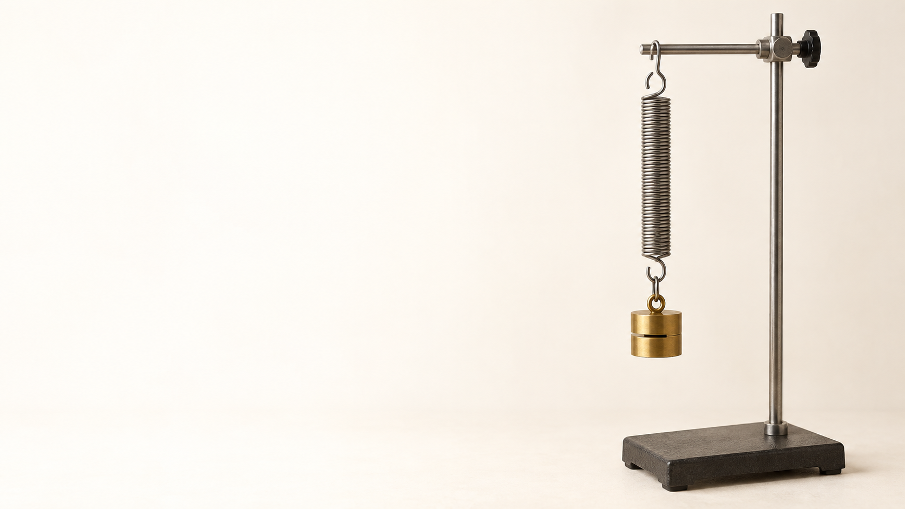

中1 理科・物理
力

中1 理科 力SeeD EDUCATION
形を変える
スポンジを押すとつぶれる
力のはたらき形を変える
中1 理科 力SeeD EDUCATION
運動のようすを変える
指で、一度だけ押す止まっていたボールが動き出す
指が離れたあとも動き続ける
中1 理科 力SeeD EDUCATION
物体を支える
落ちてきた木箱を机が受け止める
止まったあとも机が木箱を支える
中1 理科 力SeeD EDUCATION
力には、3つのはたらきがある
① スポンジを押す形を変える
② ボールを押す・止める運動のようすを変える
③ 机が物体を支える物体を支える
中1 理科 力SeeD EDUCATION
伸ばしたゴムが戻る。何の力？
手を離すと元の形に戻る
変化から考える何が、戻そうとした？
ゴムが元に戻ろうとする力弾性力
中1 理科 力SeeD EDUCATION
触っていないのに、なぜ落ちる？
手を離した物体は下に落ちる
何が引いている？地球が物体を引いている
地球が物体を引く力重力
中1 理科 力SeeD EDUCATION
下敷きに髪がつく。何の力？
こすった下敷きを近づける髪の毛が引き寄せられる
触れる前から引き合う力がはたらく
静電気による力電気の力
中1 理科 力SeeD EDUCATION
クリップが近づく。何の力？
磁石を近づけると鉄のクリップがくっつく
離れていても磁石が鉄を引き寄せる
磁石による力磁力
中1 理科 力SeeD EDUCATION
ボールが止まる。何の力？
床の上を動くボールだんだん遅くなり、止まる
動きを妨げたのは？床と接するところの力
接触面にはたらく力摩擦力
中1 理科 力SeeD EDUCATION
机の上で落ちない。何の力？
下向きに重力があるのに物体は落ちない
机から受けているのは？面が物体を押し返す力
面から垂直に受ける力垂直抗力
中1 理科 力SeeD EDUCATION
見えない力を、どう表す？
力そのものは見えない変化から、はたらきを知る
向きや大きさを伝えるために矢印で表そう
中1 理科 力SeeD EDUCATION
力を、矢印で表そう
矢印の始点作用点
矢印の向き力の向き
矢印の長さ力の大きさ
中1 理科 力SeeD EDUCATION
力の単位は、N
読み方ニュートン
地球上での目安100 gの物体の重さ ≒ 1 N
この教材の計算では100 gにつき1 Nとする
中1 理科 力SeeD EDUCATION
右向きに3 Nの力をかこう
1目盛りを1 Nとする始点から右へ3目盛り
矢印の先は3 Nの位置
中1 理科 力SeeD EDUCATION
ばねに、おもりをつるす
何もつるさないとき元の長さを測る
おもりをつるすとばねが伸びる
中1 理科 力SeeD EDUCATION
「長さ」と「伸び」は違う
何もつるさない長さ10 cm
つるしたあとの長さ12 cm
ばねの伸び12 − 10 ＝ 2 cm
中1 理科 力SeeD EDUCATION
力を増やすと、伸びは？
1 Nで2 cm伸びる
2 Nで4 cm伸びる
3 Nで6 cm伸びる
中1 理科 力SeeD EDUCATION
力と伸びを、点で表す
横軸と縦軸力［N］と伸び［cm］
測定した点を結ぶと原点を通る直線
2倍・3倍の力で伸びも2倍・3倍
中1 理科 力SeeD EDUCATION
ばねの伸びは、力に比例する
同じばねで比べる力が2倍なら、伸びも2倍
この関係をフックの法則
成り立つのは伸ばしすぎない範囲
中1 理科 力SeeD EDUCATION
2 Nを加えたときの長さは？
元の長さ10 cm・1 Nで2 cm伸びる2 Nなら、伸びは4 cm
ばね全体の長さ10 ＋ 4 ＝ 14 cm
中1 理科 力SeeD EDUCATION
5 cm伸ばすには、何N？
1 Nで2 cm伸びるばね2 cm・・・1 N
5 cmなら5 cm・・・2.5 N
中1 理科 力SeeD EDUCATION
「重さ」と「質量」を分けよう
質量物体そのものの量［g・kg］
重さ物体にはたらく重力［N］
中1 理科 力SeeD EDUCATION
月へ持っていくと？
同じ物体なら質量は変わらない
月での重さは地球の約6分の1
中1 理科 力SeeD EDUCATION
左右から引いても、動かない
同じ木片を左右から引くどちらも2 N
静止したままなら2力がつり合っている
中1 理科 力SeeD EDUCATION
2力がつり合う、3つの条件
同じ物体にはたらく2力が一直線上にある
向きは反対向き
大きさは等しい
中1 理科 力SeeD EDUCATION
右の力が、大きくなると？
左2 N・右3 Nつり合わない
止まっていた木片は右へ動き出す
中1 理科 力SeeD EDUCATION
机の上の物体にはたらく力
地球から受ける力下向きの重力
机から受ける力上向きの垂直抗力
この2力がつり合っている
中1 理科 力SeeD EDUCATION
300 gの物体を、机で支える
100 gにつき1 Nとする重力は下向きに3 N
静止しているので垂直抗力は上向きに3 N
中1 理科 力SeeD EDUCATION
見えない力を、図で考えよう
力のはたらき変形・運動の変化・支持
力の表し方作用点・向き・大きさ
ばねとつり合い比例と、2力の3条件
中1 理科 力SeeD EDUCATION